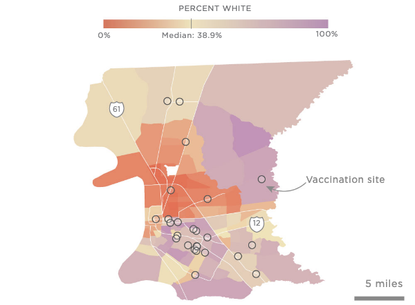

<%= await t.include("lib/_head.html") %>
<% if (COPY.labels.pitt_hed) { %>
<%= t.smarty(COPY.labels.pitt_hed) %>
<% } %>
<% if (COPY.labels.pitt_subhed) { %>
<%= t.smarty(COPY.labels.pitt_subhed) %>
<% } %>
<%=COPY.labels.whisker_legend%>
aria-label="<%- COPY.labels.screenreader %>"
<% } %>
>

<% if (COPY.labels.pitt_footnote) { %>
<% } %>
<%= await t.include("lib/_foot.html") %>